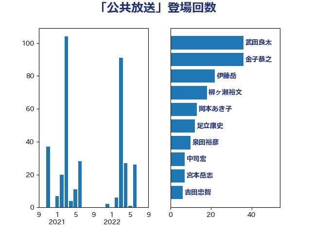

単語「公共放送」

| 武田良太 | 自由民主党 | 36 回 |
| 金子恭之 | 自由民主党 | 36 回 |
| 伊藤岳 | 日本共産党 | 22 回 |
| 柳ヶ瀬裕文 | 日本維新の会 | 18 回 |
| 岡本あき子 | 立憲民主党 | 13 回 |
| 足立康史 | 日本維新の会 | 12 回 |
| 泉田裕彦 | 自由民主党 | 10 回 |
| 中司宏 | 日本維新の会 | 7 回 |
| 宮本岳志 | 日本共産党 | 7 回 |
| 吉田忠智 | 立憲民主党 | 6 回 |
| 岸真紀子 | 立憲民主党 | 6 回 |
| 守島正 | 日本維新の会 | 5 回 |
| 本村伸子 | 日本共産党 | 5 回 |
| 湯原俊二 | 立憲民主党 | 5 回 |
| おおつき紅葉 | 立憲民主党 | 4 回 |
| 中西祐介 | 自由民主党 | 4 回 |
| 國重徹 | 公明党 | 4 回 |
| 後藤田正純 | 自由民主党 | 4 回 |
| 青山繁晴 | 自由民主党 | 4 回 |
| 山田宏 | 自由民主党 | 3 回 |
| 杉田水脈 | 自由民主党 | 3 回 |
| 西岡秀子 | 国民民主党 | 3 回 |
| 鈴木庸介 | 立憲民主党 | 3 回 |
| 堀井巌 | 自由民主党 | 2 回 |
| 小沢雅仁 | 立憲民主党 | 2 回 |
| 沢田良 | 日本維新の会 | 2 回 |
| 芳賀道也 | 国民民主党 | 2 回 |
| 菅義偉 | 自由民主党 | 2 回 |
| 古賀之士 | 立憲民主党 | 1 回 |
| 斎藤洋明 | 自由民主党 | 1 回 |
| 杉本和巳 | 日本維新の会 | 1 回 |
| 浜田聡 | NHK党 | 1 回 |
| 石川博崇 | 公明党 | 1 回 |
| 神谷裕 | 立憲民主党 | 1 回 |
| 若松謙維 | 公明党 | 1 回 |
| 輿水恵一 | 公明党 | 1 回 |
| 道下大樹 | 立憲民主党 | 1 回 |
| 阿部弘樹 | 日本維新の会 | 1 回 |